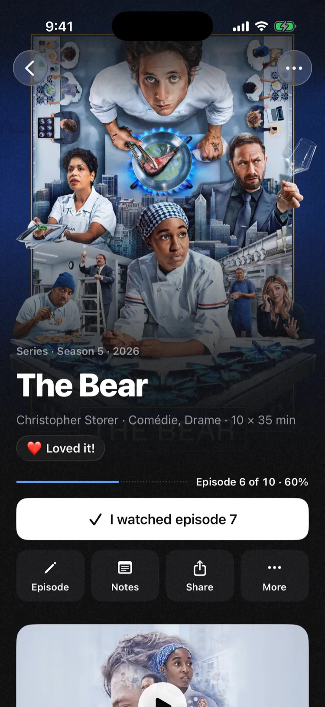

Un diario de películas para todo lo que ves
Última actualización: 21 de noviembre de 2026
Porcom lleva el diario de las películas que ves: la fecha, tu veredicto, tus notas y cada vez que la vuelves a ver, en tu iPhone. Gratis, sin cuenta y sin anuncios.

Cada película se abre con su tráiler
Busca un título: el póster, la sinopsis, el reparto y el tráiler vienen de TMDB. Luego dale un veredicto, 👎 Meh, 👍 Liked, ❤️ Loved it! o 🔥 Devoured!, y califica el guion, la actuación, la dirección, lo visual, la banda sonora y el final si quieres matizar.
La fecha de cada vez que la ves
¿La viste anoche? Márcala como vista y esa noche cuenta. Vuelve a verla y Porcom registra un nuevo visionado: tus repeticiones tienen su lugar en el calendario.

Logros para cinéfilos
Una película de tres horas, una sesión doble, un clásico de antes de 1970, una película de terror el 31 de octubre: logros por desbloquear, doce niveles y un reto cada mes.

Comparte tu veredicto
Comparte una película con tu veredicto como imagen, cuadrada para una publicación o vertical para una historia.

Tu año en películas
Tus horas de pantalla y los títulos vistos, por plataforma y por género. Al final del año, tu año en pantalla: el mes más intenso, la película más larga y el director del año.

¿Ya usas Letterboxd?
Porcom exporta las películas que viste a un archivo CSV en el formato de importación de Letterboxd, con la fecha, tu veredicto y tus notas.

Gratis y privado
Porcom funciona sin cuenta. Tu diario se queda en tu iPhone y en tu iCloud privado, al que no tenemos acceso. La app está en inglés y francés.
Descarga Porcom en el App Store: gratis, sin cuenta, sin anuncios y sin suscripción.
Preguntas
Consulta las preguntas frecuentes o visita el soporte.